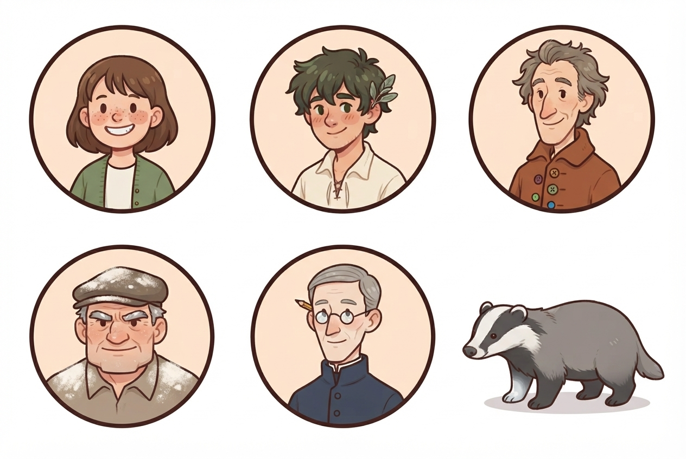
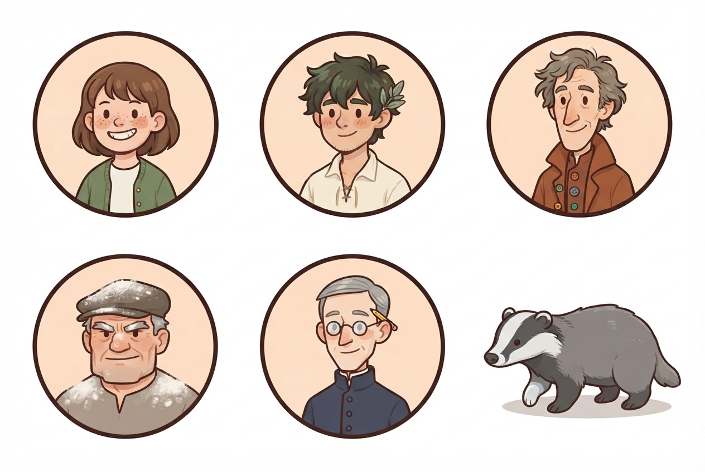
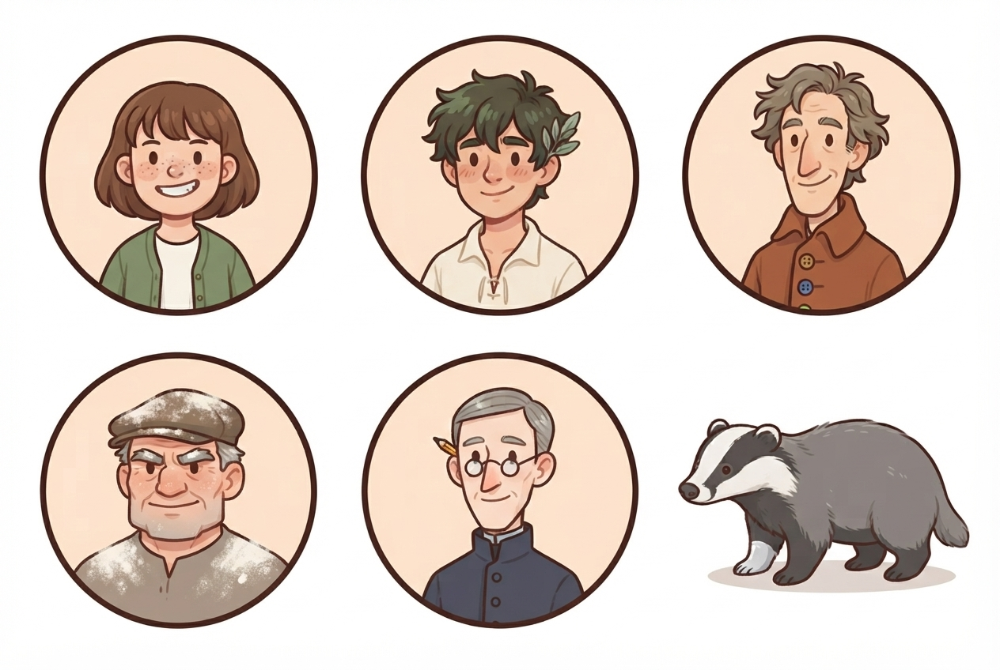

Green frame = the pick used in the game. To swap: python3 .claude/skills/openart-pictures/fetch.py pick sheet60-friends-badger <version>, then import again.



A sprite sheet of exactly 6 separate pictures in 2 rows of 3, in exactly the art style of reference image 1 (use it only for the style): bright, friendly children's-game cartoon, thick rounded dark outlines, flat colours with simple cel shading, round friendly faces with small dot eyes and rosy cheeks. Plain pure white background, evenly spaced with wide white space between them, none touching. No text, no letters, no numbers, no captions under the pictures, no frames around the sheet, no grid lines. Pictures 1 to 5 are postcard stamps: each a head-and-shoulders portrait inside a perfect circle with a thick dark-brown outline and a pale peach background, the person friendly, looking at the viewer, all five circles the same size. Row 1: (1) a girl of about twelve with a brown bob, freckles and a green cardigan, grinning; (2) a young man of about twenty with messy dark-green-tinted brown hair, a cream linen shirt and a sprig of sage tucked behind his ear, shy smile; (3) a tall thin man of no clear age with a long friendly face, tousled grey-brown hair and a rust-brown coat whose buttons are all different sizes and colours, a knowing smile. Row 2: (4) an old miller with a stern square face that is almost smiling, bushy grey eyebrows, a flat cap, his hair, cap and shoulders dusted white with flour; (5) a stiff, tidy steward with a thin face, small round spectacles, grey hair combed flat, a dark-blue buttoned coat with a high collar and a pencil behind his ear, a tiny proper smile; (6) NOT a stamp: a whole badger standing on four legs seen from the side, facing left, chunky and cute, grey fur, black-and-white striped face, with a silver-white front paw, small soft shadow under it, no circle.